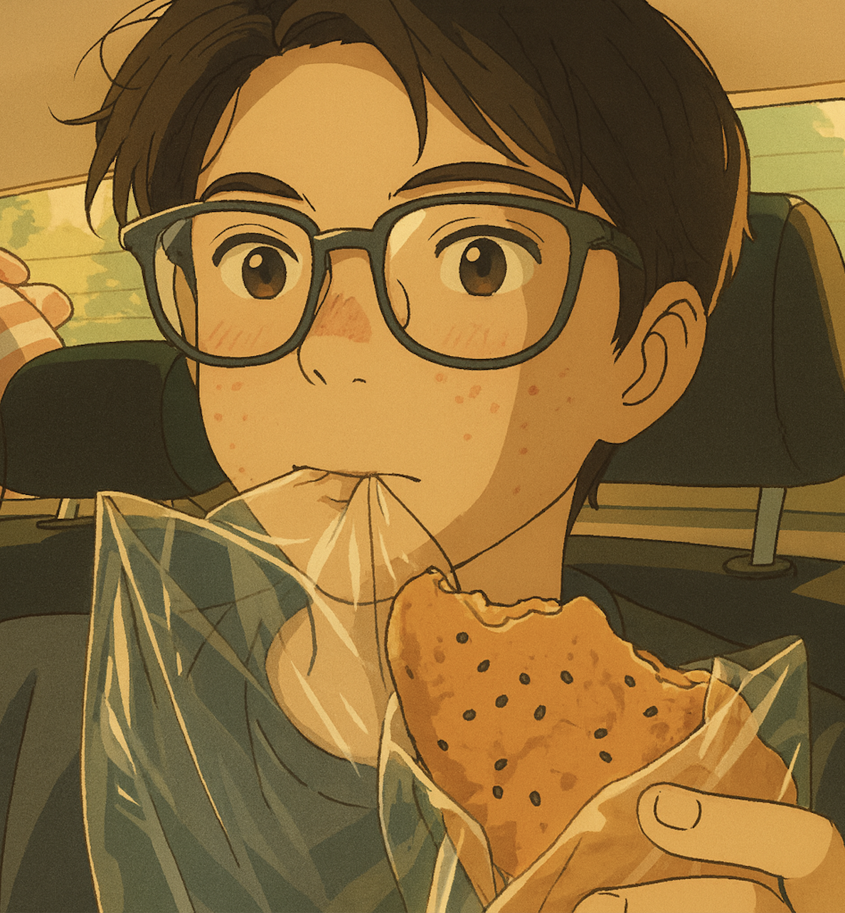

|
Junming Lin I am currently a senior undergraduate student at Beijing University of Posts and Telecommunications (@ BUPT), majoring in Telecommunications Engineering. I am also an incoming graduate student at the Department of Computer Science and Technology, Tsinghua University (@ THU), where I will begin my Master's degree in Artificial Intelligence in 2026. My research interests lie in the areas of Multimodal Large Language Models, Reinforcement Learning, and Diffusion Models. |

"西郊有密林，助君出重围" |
{kind=link}
ResearchI'm interested in MLLM, Embodied AI, and Reinforcement Learning. My research vision is to achieve robots and artificial intelligence with higher-level intelligence. |
Education |

|
Master Student
Tsinghua University, Department of Computer Science and Technology Computer Science and Technology 2026.09 - 2028.06 (expected) |
|
Undergraduate Student
Beijing University of Posts and Telecommunications Telecommunications Engineering Rank: 1st / 316 2022.09 - 2026.06 |
Internship Experience |

|
Algorithm Intern
Shanghai AI Laboratory, LLM Center Mentor: Dr. Haodong Duan and Prof. Xue Yang 2025.03 - present |
|
Research Intern
THUNLP, Multimodal Group Mentor: Dr. Chi Chen and Dr. Shuo Wang 2024.06 - 2025.03 |